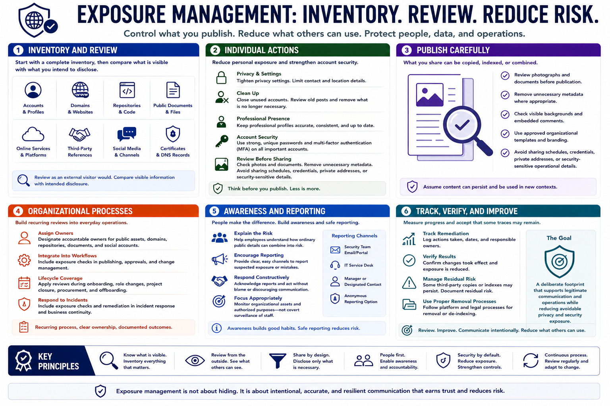

Managing and Reducing Exposure
Connecting to LMS... Progress: in progress

Narration
Exposure management starts with an inventory of important accounts, profiles, domains, repositories, public documents, services, and third-party references. Review them as an external visitor would, then compare what is visible with what the person or organization intends to disclose.
Individuals can tighten privacy settings, remove unnecessary contact or location details, close unused accounts, review old posts, and keep professional profiles accurate and consistent. Strong unique passwords and multi-factor authentication reduce the chance that an existing footprint becomes an account compromise.
Review photographs and documents before publication. Remove unnecessary metadata where appropriate, check visible backgrounds and embedded comments, and use approved organizational templates. Avoid sharing schedules, credentials, private addresses, or security-sensitive operational details.
Organizations need recurring review processes rather than one cleanup event. Assign owners for public assets, domains, repositories, documents, and social accounts. Integrate exposure checks into publishing, employee onboarding and departure, project closure, procurement, and incident response.
Employee awareness should explain why ordinary public details can combine into risk without encouraging fear or secrecy. Provide clear reporting channels for suspected exposure and respond constructively. Monitoring should focus on organizational assets and authorized purposes, not covert surveillance of staff.
Track remediation and verify results. Some third-party copies or indexes may persist, so record residual risk and follow appropriate removal processes. The goal is a deliberate footprint that supports legitimate communication and operations while reducing avoidable privacy and security exposure.